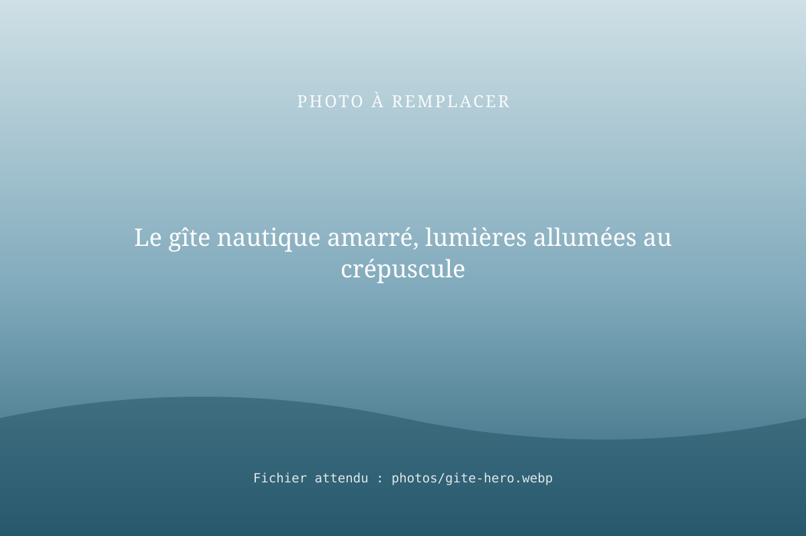
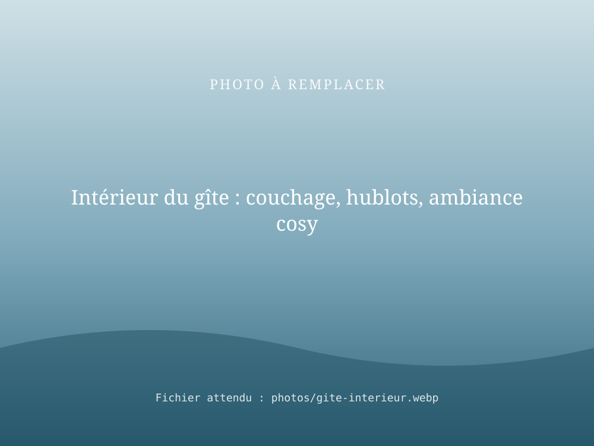

Gîte nautique : une nuit insolite au fil de l'eau
Le gîte nautique RivesEnRêves est un hébergement insolite à bord d'un bateau amarré au bord de la Marne, en Seine-et-Marne. On s'endort bercé par la rivière et on se réveille face à l'eau.

Pourquoi dormir sur l'eau ?
- Le calme : pas de voisins, seulement le clapotis et les oiseaux.
- L'insolite : une expérience qu'on raconte longtemps.
- La nature : la vallée de la Marne à portée de main, pour marcher, pédaler ou pêcher.
- La simplicité : un séjour facile à organiser, à proximité de l'Île-de-France.
À bord
[À COMPLÉTER : description du bateau-gîte, équipements, couchages, espaces extérieurs]

Infos pratiques
| Lieu | [À COMPLÉTER] |
|---|---|
| Couchages | [À COMPLÉTER] |
| Arrivée / départ | [À COMPLÉTER] |
| Période d'ouverture | [À COMPLÉTER] |
| Tarifs | [À COMPLÉTER] |
Questions fréquentes
Le gîte nautique navigue-t-il pendant le séjour ?
Le gîte nautique est un hébergement à quai : vous dormez à bord d'un bateau amarré. Une balade en bateau peut être ajoutée à votre séjour sur demande.
Combien de personnes peuvent dormir dans le gîte nautique ?
[À COMPLÉTER : nombre de couchages et configuration].
Le gîte nautique est-il chauffé et équipé ?
[À COMPLÉTER : chauffage, cuisine, sanitaires, linge fourni].
Est-ce une bonne idée de cadeau ?
Oui : une nuit insolite sur l'eau est un cadeau original. Contactez-nous pour connaître les possibilités de bon cadeau.
Réservez votre nuit sur l'eau
Indiquez vos dates et le nombre de voyageurs : nous vous répondons avec les disponibilités.